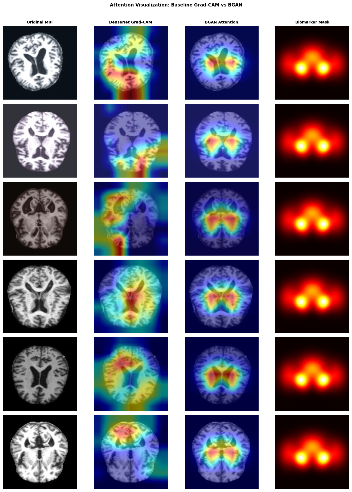

BGAN pipeline, step by step
A clean modular design built on DenseNet121, with only ~133K added parameters for the entire attention + blend system.
DenseNet121 backbone
Pretrained on ImageNet. Dense skip connections promote feature reuse and efficient gradient flow, ideal for limited medical imaging data.
Channel Attention (SE-style)
Global average + max pooling → two FC layers → sigmoid weights each of the 1024 channels. Bottleneck ratio r=16. Emphasises discriminative feature maps.
Spatial Attention (CBAM-style)
Channel-wise avg and max pooling → Conv7×7 → sigmoid. Produces a [B, 1, 7, 7] map highlighting the most relevant spatial locations.
Gaussian biomarker prior mask
A soft 224×224 mask built from 9 weighted Gaussians centred on bilateral hippocampus, entorhinal cortex, temporal lobes, ventricles, and posterior parietal cortex.
Learnable blend α
A* = σ(α)·A_sp + (1−σ(α))·M_bio. Scalar α trained end-to-end, initialised to 0 (equal blend). Allows the model to learn how much to trust the prior.
Composite loss with λ-warmup
L = L_CE + λ(t)·L_bio. λ warms from 0.02 → 0.1 over 8 epochs. Prevents alignment loss from overwhelming classification signal early in training.

Figure 3.1: Proposed Biomarker-Guided Attention Network (BGAN) architecture. The dashed region highlights the novel components including channel attention, spatial attention, biomarker-guided blending, and feature modulation.
Rigorous, leak-free data handling
A pre-augmented Kaggle dataset with 44,000 MRI images. Standard random splitting would leak augmented twins across train/test — we fix this.
Stage 1 — MD5 deduplication
All 44,000 images byte-hashed. 462 exact byte-identical duplicates removed, yielding 43,538 unique images to start.
Stage 2 — perceptual hash clustering
pHash computed at 16×16. Pairs with Hamming distance ≤ 6 grouped using Union-Find. 29,023 near-duplicate pairs identified across 27,273 source groups.
Stage 3 — group-level stratified split
Splits at the group level, not image level. All augmented variants of a source scan stay together. Final: 32,341 train / 5,683 val / 5,514 test. Zero hash overlap verified.
Model comparison
All models evaluated on 5,514 held-out test images. BGAN is the only model with competitive accuracy and clinically meaningful attention.
* ResNet50 accuracy likely inflated by residual near-duplicate leakage (BAS std = 5.25 indicates unstable attention behavior)
The VGG16 insight: VGG16 achieves 94.14% accuracy while attending to zero biomarker regions (BAS = 0.000). This is the central finding of the paper — high accuracy alone is not evidence of clinically valid reasoning. A model that predicts correctly for the wrong reasons may fail under distribution shift or different scanner conditions. BGAN is the only model that is simultaneously competitive in accuracy and interpretable in its spatial attention.
Biomarker Alignment Score distribution
Baselines (GradCAM-based BAS)
BGAN (built-in spatial attention)
Tight std of 0.482 confirms consistent biomarker alignment across the entire test set — not just on favorable samples. This stability is critical for clinical deployment.

Attention Visualization: Grad-CAM vs BGAN vs Biomarker Mask